Cone Contrast (Blurred Color Background, DKL Split)
Contrast factor: 0.1


Contrast factor: 0.31
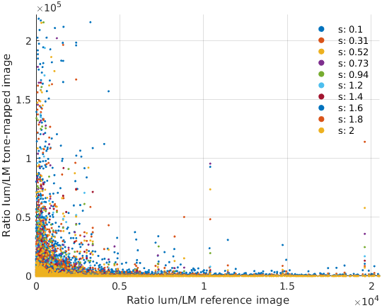

Contrast factor: 0.52
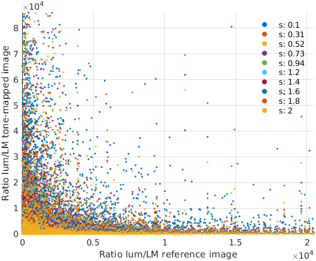
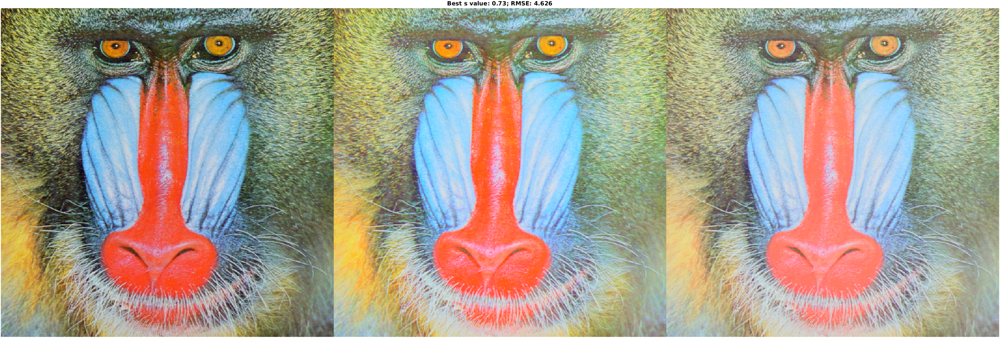
Contrast factor: 0.73
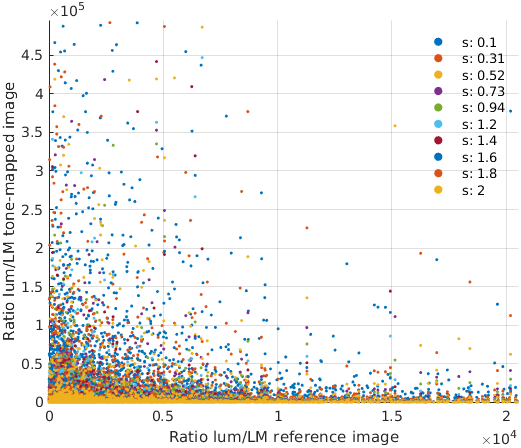

Contrast factor: 0.94
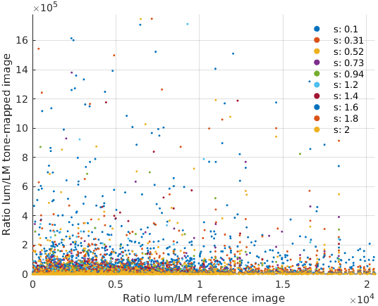

Contrast factor: 1.2
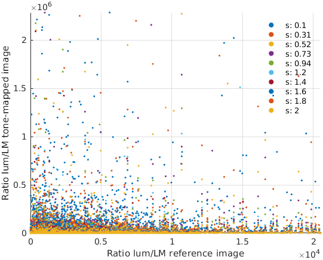

Contrast factor: 1.4
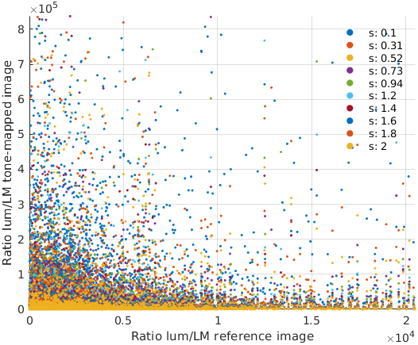

Contrast factor: 1.6
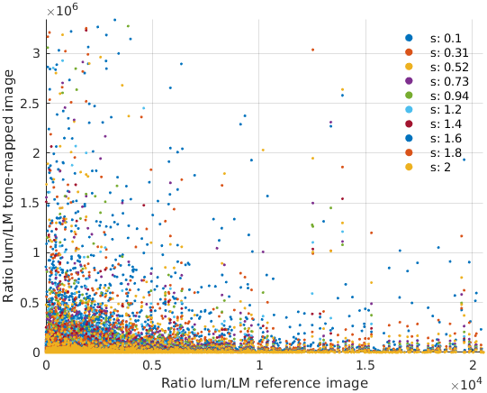

Contrast factor: 1.8
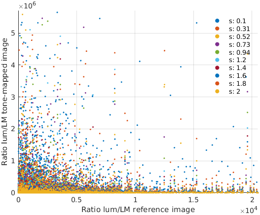

Contrast factor: 2
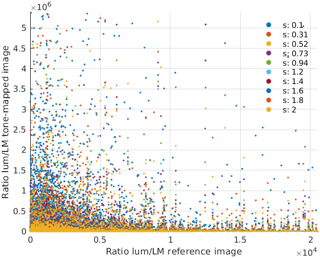

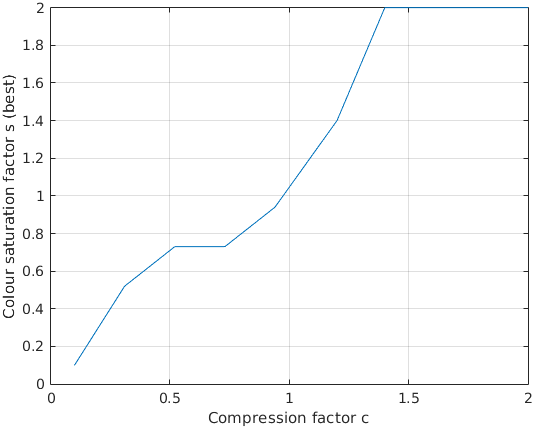